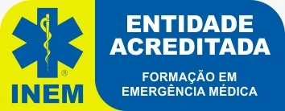
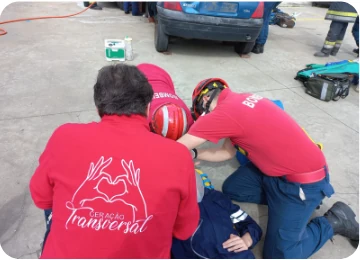
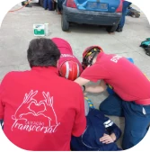
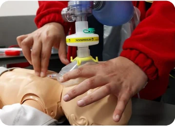
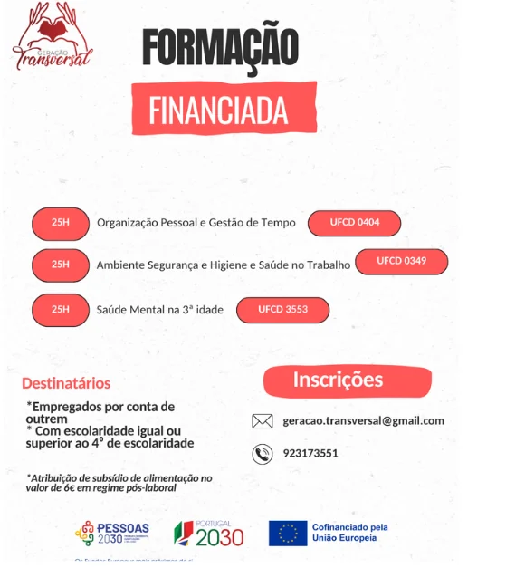

729
Saúde
Capacitação e atualização de competências no contexto da saúde.
Desenvolvemos competências que fazem a diferença. Formação profissional especializada, orientada para a prática e adaptada a pessoas, empresas e organizações.





Somos uma entidade especializada no desenvolvimento e implementação de formação profissional, com soluções desenhadas para responder às necessidades reais de profissionais, empresas e organizações.
Conheça algumas das nossas formações acreditadas na área da emergência médica.
Uma oferta diversificada em áreas essenciais para o desenvolvimento de competências profissionais.
Capacitação e atualização de competências no contexto da saúde.

Desenvolvimento de competências para contextos de apoio e intervenção social.
Conhecimentos e práticas nas áreas da segurança e proteção.
UFCD individuais e curso completo de Técnico Auxiliar de Saúde com estágio.
A confiança também se constrói com transparência. Consulte a certificação DGERT e os documentos de acreditação INEM para SBVDAE, TAT e TAS.
Ver certificações e documentos →

Participamos em iniciativas de formação que promovem a qualificação de adultos, a empregabilidade e a aprendizagem ao longo da vida.

Reunimos as respostas às questões mais comuns sobre as nossas formações, certificações e inscrições.
Ainda tem dúvidas? Fale connosco →Esclareça as suas dúvidas e encontre a formação adequada aos seus objetivos.